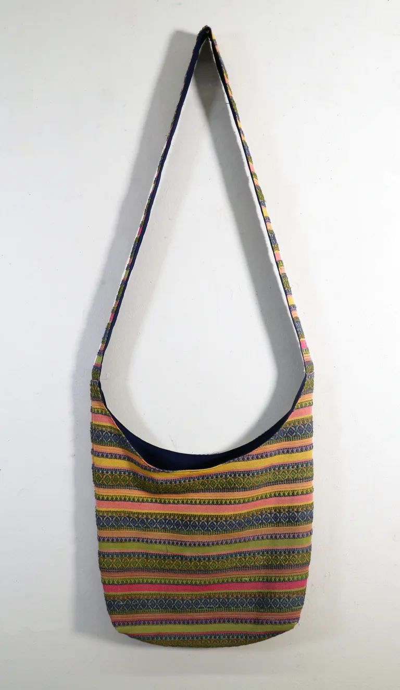
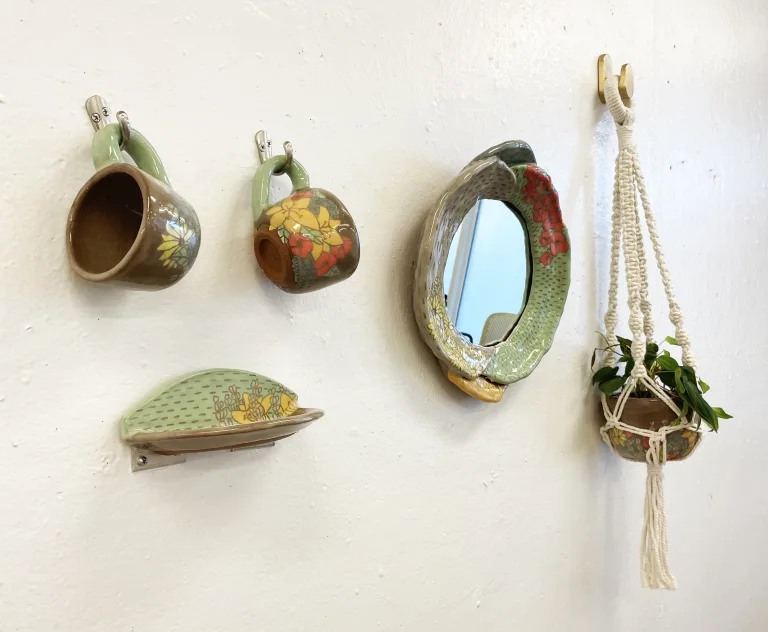
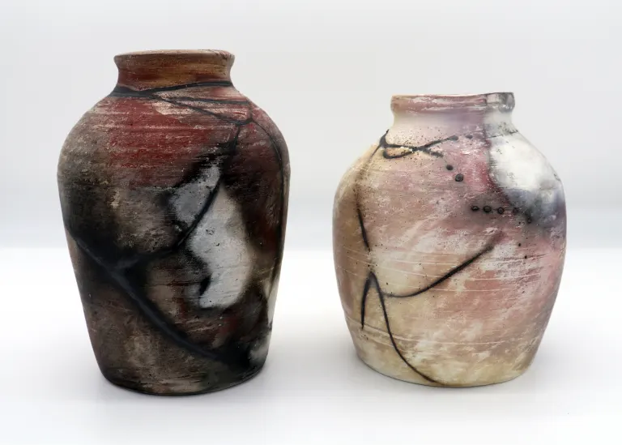
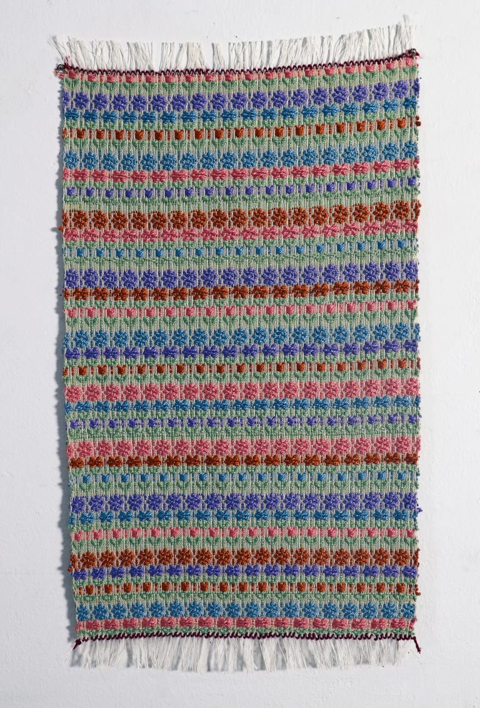
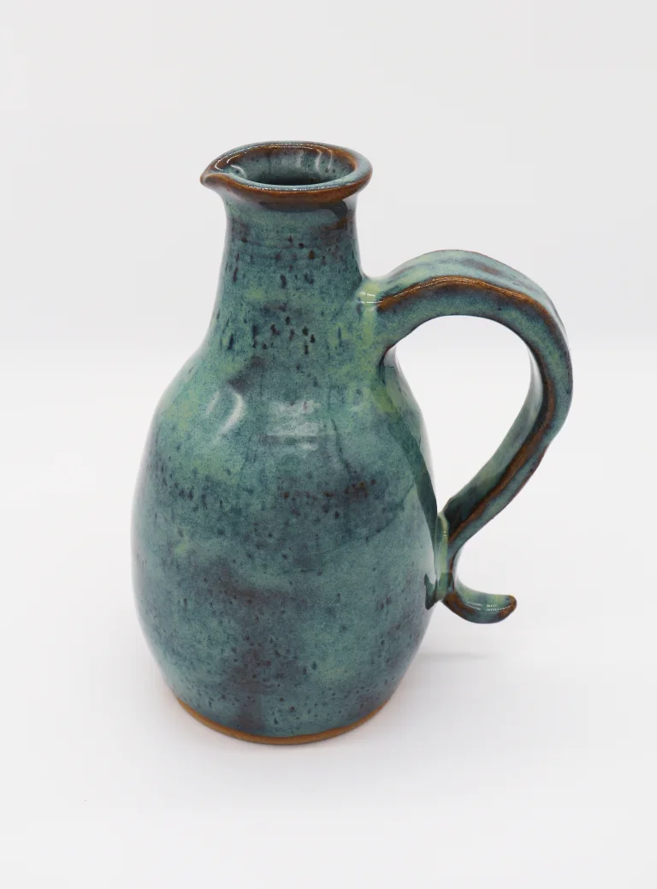

<script type="application/ld+json">
{
  "@context": "https://schema.org",
  "@graph": [
    {
      "@type": "Organization",
      "@id": "https://www.edgeofliberty.us/honey-nilson-art/#org",
      "name": "Honey Nilson Art",
      "url": "https://www.edgeofliberty.us/honey-nilson-art/",
      "description": "Handmade ceramic art and weavings",
      "image": "https://www.edgeofliberty.us/honey-nilson-art/243f5e97cd2121ff90ace7825181c3c8bdedf816.webp",
      "areaServed": {
        "@type": "City",
        "name": "Valparaiso, Indiana"
      }
    },
    {
      "@type": "BreadcrumbList",
      "itemListElement": [
        {
          "@type": "ListItem",
          "position": 1,
          "name": "Home",
          "item": "https://www.edgeofliberty.us/"
        },
        {
          "@type": "ListItem",
          "position": 2,
          "name": "Honey Nilson Art",
          "item": "https://www.edgeofliberty.us/honey-nilson-art/"
        }
      ]
    }
  ]
}
</script>
<section class="vendor-page">
<h1>Honey Nilson Art</h1>
<div class="vendor-content">
<p class="vendor-lead">Handmade ceramic art and weavings — find Honey Nilson Art at The Edge of Liberty Craft Fair in Valparaiso, IN (Northwest Indiana).</p>
<p>Handmade Ceramic art and weavings, including but not limited to sculptures, mugs, vases, tapestries, bags, bookmarks, and lanyards. A blend of both fine art and functional ware.</p><p class="vendor-inperson-only">This vendor currently sells in person at our craft fairs only.</p>
<div class="vendor-dates">
<h3>Find us at these craft fair dates</h3>
<ul>
<li><a href="/october-18-2026/">October 18, 2026</a></li>
</ul>
</div>
<h3>Gallery</h3>
<div class="vendor-photos constrained-gallery">
<div class="vendor-masonry">





</div>
</div>
</div>
</section>
